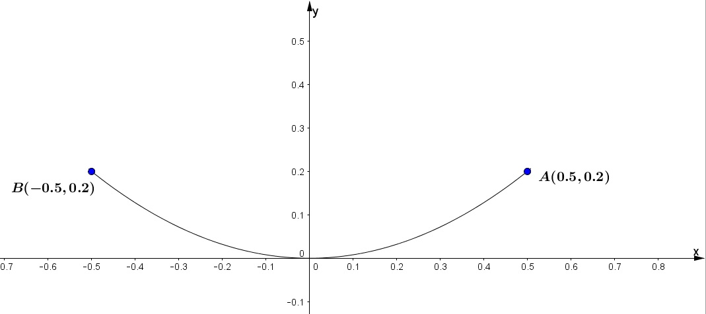
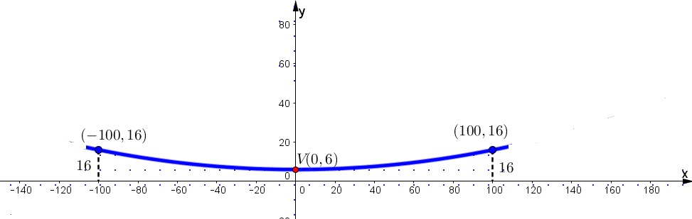

Resolución de problemas en diversos contextos
Como recordarás, en la presentación de la unidad, la parábola tiene múltiples aplicaciones en diversos contextos de nuestra vida cotidiana. Considera los siguientes ejemplos de problemas sobre la parábola con la finalidad de que puedas realizar los que se te piden después de los ejemplos.
Ejemplo 1. Una antena parabólica tiene un diámetro de 1 metro. si tiene una profundidad de 20 centímetros, ¿a qué altura debemos colocar el receptor?; es decir ¿a qué distancia está el foco del vértice?
Solución: Primeramente, unifiquemos las unidades de medida $20cm = 0.20m$ Ahora colocamos los ejes coordenados de manera que el vértice esté en el origen y su eje coincida con el eje "y" como se muestra en la figura 1.

Figura 1. Antena parabólica.
Entonces la ecuación de la parábola es: $x^2 = 4py\ ...(1)$
Debemos determinar el valor de "p", que es la distancia del foco al vértice. Como el diámetro de la antena es de 1 metro y ésta tiene una profundidad de 0.20 metros, los puntos $(0.5,0.2)$ y $(-0.5,0.2)$ están en la parábola. Sustituimos cualquiera de ellos en la expresión (1)y despejamos (p).
$$(0.5)^2 = 4p(0.2)$$
$$0.25 = 0.8p$$
$$p= \frac{0.25}{0.8} = 0.3125$$
Por lo que las coordenadas del foco son $F(0,0.3125)$. Así que debemos colocar el receptor a una altura de $0.3125m$ o $31.25$ centímetros del vértice.
Ejemplo 2. Los cables de un puente colgante forman un arco parabólico. Los pilares que lo soportan tienen una altura de 16 metros sobre el nivel del puente y están separados 200 metros. El punto más bajo del cable queda a 6 metros sobre la avenida del puente. Calcula la altura del cable a 80 metros del centro.
Solución: Si tomamos como eje "x" la horizontal que define el puente y el eje "y"como el eje de la parábola tenemos la figura siguiente.

Figura 2. Puente colgante.
De acuerdo con la figura 2, la ecuación de la parábola es de la forma:
$$(x-h)^2 = 4p(y-h)$$
Donde $h=0$ y $k=6$
Al sustituir valores queda:
$(x-0)^2 = 4p(y-6)$ ó $x^2 = 4p(y-6)$
Considerando que hay dos puntos (x,y) que pasan por la parábola, por ejemplo: 100,16, podemos determinar $4p$
$$(100)^2 = 4p(16-6)$$
$$10000 = 4p(10)$$
$$4a = \frac{10000}{10} = 1000$$
Al sustituir $x=80$ en la ecuación $x^2 =4p(y-6)$ , pues es la distancia a la cual nos pide la altura "y" queda:
$$(80)^2 = 1000(y-6)$$
$$\frac{6400}{1000} = y-6$$
$$6.4 + 6 = y$$
$$y= 12.4$$
La altura del cable a $80m$, del centro es de $ 12.4m$.
Resolución de problemas con parábolas
Te invitamos a participar en la siguiente actividad.